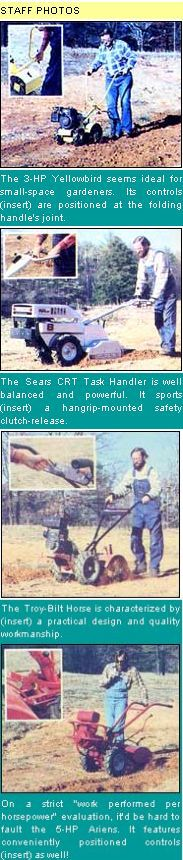
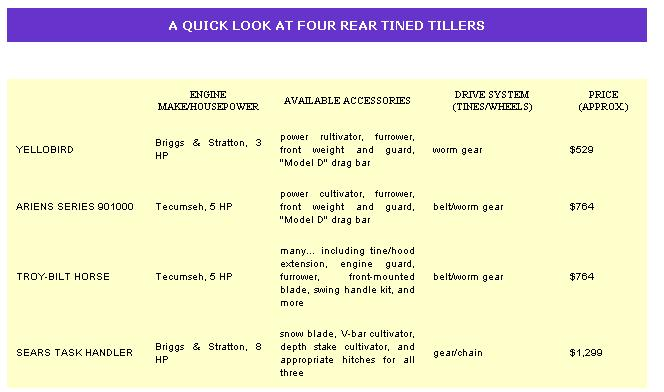

Most gardeners, at one time or another, consider buying a rototiller... and the primary consideration in doing so is matching the implement to the job(s) that it'll be expected to perform. In order to help our readers choose the machines they need , MOTHER has compiled...
A rototiller is a big investment, and many folks find that they can get along lust fine renting or borrowing the machines when they need them ... usually no more than once in the spring to till the garden, and again in the fall to chop up crop wastes and expose belowground insect larvae, etc.
However, the more involved a person becomes with wholistic gardening, the more practical it often becomes for him or her to own a tiller. After all, the machines can be used to cultivate between rows throughout the growing season (produring an orderly and weed-free garden without the timeconsuming labor of hand hoeing) ... to retill areas as crops mature and are harvested (allowing for easy succession planting) ... and more.
But it's often difficult for the potential tiller owner to decide just how much machine he or she needs. And the decision is an important one, because the prices of rototillers tend to rise in proportion to the power of the tools. Therefore, buying too large a tiller for your purposes can result in unnecessary expense, and inconvenience when trying to maneuver the big machine around a small garden ... while purchasing too small a tiller can result in frustration, extra labor, and-worse yet-even the need to rent a large model to break up your soil before the "little teller" can handle it!
There are, of course, any number of good tillers on the market, but in preparing this article, we decided to limit ourselves to a sampling-which spans the most popular horsepower ratings-of rear -tined tillers. The following list of machines isn't complete, then, and isn't meant to imply that tillers not included are in any way inferior to those listed. It is, however, intended to give you an understanding of what you can expect from the four specific models tested ... and of the potential of other machines with similar horsepower ratings.
The little Yellowbird (sold by Precision Valley Manufacturing Co., Dept. TMEN, Springfield, Vermont 05156) is-as far as we know-the smallest reartined tiller on the market. Weighing a scant 75 pounds without its blades in place and sporting a 3-HP Briggs & Stratton engine, the Bird is a fine tool for gardeners who have small plots and/or often need to till in confined areas.
Of course, the machine's light weight and limited horsepower may be disadvantages when one has a large garden or needs to cultivate unbroken sod. However, we found that even the latter task can be accomplished with the small tiller. In our tests the Bird was able to work a previously unbroken pasture to a depth of 4-1/2 inches, although eight passes with the machine were necessary to do so.
Our gardeners/ testers also noted that they often wished the Yellowbird had handlebar- mounted speed and throttle adjustments (the wheels and tines turn at set speeds, while the throttle is controlled at the engine) ... the ability to operate in reverse (which can be important when reworking difficult patches of ground) ... and the option of disengaging the tines while keeping the wheels turning for transport. (The little tiller's single forward speed also left something to be desired when traveling from garden to barn, garage, or basement.)
On the other hand, our evaluators praised the narrow (14") tines, which-in conjunction with the tiller's light weight-made working in between established rows of plants (without accidentally wiping out crops) a breeze. The gardeners found the folding handle to be convenient, too-allowing for easy storage and auto trunk or station wagon transport-and appreciated the reversible depth-adjustment bar ... which can either ride smoothly in the tilled soil or, when attached backwards, hook itself into the earth and force the tines to dig in.
The Yellowbird, all in all, is especially designed for people with smaller "back- yard" gardens and-for such folks-represents a good swap of power for agility and convenience.
The 5-HP Tecumseh-engined Ariens tiller (Ariens Company, Dept. TMEN, Brillion, Wisconsin 54110) constitutes a "middle ground"-in both power range and weight (about 275 pounds)-between the little Yellowbird and the "big boys" described below.
MOM's evaluators were every much impressed with the Arrens' overall performance. They did, however, criticize its lack of a "high-range" forward speed (available on other Ariens models) for going to and from the garden, and wish that it weren't necessary to bend over to engage the tines or wheels (admittedly a small criticism).
The tiller's good points far outweighed the bad, however. It features a reversible depth bar, as does the Yellowbird. And, unlike the smaller machine, its tines can be disengaged while the wheels are in operation... so you can walk the tiller across your lawn without worrying about accidentally taking out an 18" swath of carefully nurtured bluegrass (actually, the tine width can be adjusted from 12" to 19"). Perhaps the best feature of the Artens, though, is its ability to use the power put out by its relatively small five-horse engine. The machine was able to reach a depth of 4-1/2 inches-starting on unturned sod-in four passes. If your garden is of reasonable size and if you'll occasionally have to tackle hard-to-work soil, we think you'll find the Ariens to be an excellent choice for the money.
The Troy-Bill (Garden Way Manufacturing Company, Inc., Dept. TMEN, 102nd Street and 9th Avenue, Troy, New York 12180) has, as a result of its great (and deserved) popularity, become almost everyone's image of a rear-tined tiller. For our tests, we chose the 7-HP, Kohler-engined "Horse" model. Weighing in at approximately 286 pounds, the machine is only a little heavier than is the Ariens, but gives an impression of far greater size.
All of our testers had used Troy-Bilt machines prior to meeting the Horse, and many of them had actually owned tillers manufactured by the New York firm. Despite such familiarity, though, there were a few criticisms.
For one thing, several of the people who used the tiller were disturbed by its front-heaviness... finding that the tool "wanted" to tip forward. Furthermore, those who'd enjoyed the reversible depth bar on the Ariens and Yellowbird, and the ability of the Ariens to keep its wheels running while the tines are disengaged, were disappointed that the Troy Bilt lacked these two features.
Finally, the Horse incorporates an "automatic clutch" that causes the machine to shift into "neutral" automatically when the tines encounter hidden rocks or unusually hard ground ... a feature which prevents the tiller from running away with its operator. On the unit that we tested, however, the safety mechanism appeared to be too sensitive and shifted the machine into neutral at the slightest lurch. (This problem could certainly be handled by a not-too difficult adjustment.)
Again, however, the tiller's good points overshadowed its bad ones. Everybody was impressed by the quality of the Troy-Bilt's construction ... andevenmoreby the fact that the design allows adjustments and parts replacement to be easily handled by the owner. The machine has a good range of speeds, too, being able to hunker down at 0.5 MPH for hard work or roll along at 1.72 MPH when the job's done and it's time to go home. And, in our "unbroken sod" tests, the Horse opened an (adjustable) 20"-wide, 4-1/2"-deep seed bed in three passes.
Perhaps the single best quality of the Troy-Bill tiller, however, is the manufacturer's commitment to wholistic gardening, as represented by the incredibly detailed owner's manual (which not only covers almost any maintenance chore that the owner might have occasion to perform, but even gives detailed instructions for everything from tilling on slopes to green-manure cropping and wide-row gardening) and the information-packed, five-issue-a-year owners' newsletter put out by the company. Garden Way really does seem to try to make its customers feel part of the "Troy-Bllt Family" ... and, when the careful instructions that the firm provides are heeded, the sturdy machine should give years of versatile and productive service.
When we contacted the folks at Sears, Roebuck and Co. (Dept. TMEN. Sears Tower, Chicago. Illinois 60684) to ask whether they had a tiller that would fill out the "heavyweight" side of our evaluation, they had to put us off for a few weeks. It seems that the company did have a unique new model in the works, but hadn't as yet finished testing it. Before long, though, the prototype 8-HP (Briggs & Stratton-powered) unitarrived ... and quickly proved itself to be well worth the wait!
The most noteworthy features of the Sears Task Handler are its counter-rotating tines (CRT). While all the other tillers tested for this article have blades that spin "forward", as do the wheels, the new Sears design incorporates "diggers" that turn in the opposite direction from its tires. Therefore, the tines pullagainst the wheels, and the struggle between the opposing forces really lets the tiller churn up earth! Moreover, the tilled soil is actually lifted and thrown back upon the tines ... in effect doubletilling a very fine-particled seedbed.
Our testers found little to criticize about the CRT. They did note that the machine is too large to be useful in close quarters, but most felt that few people would even purchase such a tiller for use in small or cramped spaces. The choke control was called "frail" by one of our evaluators... but-since our unit is a one-of-a-kind test model-that feature might be beefed up before the machine reaches production. (On the other hand, we can't speculate on the long-term reliability of this very new design ... although it held up well for us. )
And everyone who tried the tiller was astonished at how well balanced the 300-pound machine is! Furthermore, the Task Handler is clearly the best "digger" of the bunch ... able to churn up a beautifully prepared 21"-wide. 4-1/2"-deep bed-on previously unbroken sod-in one pass . The handlebar controls were well liked, too, especially the convenient safety clutchrelease ... but the machine's ability to make short work of any job that you'd conceivably ask of a tiller is far and away its best feature. If you're the sort who has a big garden (or, perhaps, who tills other folks' plots for parttime cash) and deals with difficult soil types, you're not likely to find another tiller that'll help you do your work more quickly or more easily.
There you have it ... a rundown on four representatives of the rear-tined tiller world. As noted above, any of the machines in this evaluation is worthy of recommendation, if the scope of your gardening activities matches its abilities. Study the information here and in the accompanying chart before making a purchase and-if possible-try to borrow a number of different machines to "test run" before you lay down your hardearned bucks ... and you'll end up with a garden helper that'll be a pleasure to use for years to come!
|
 |
 |
|